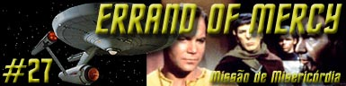
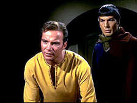
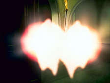
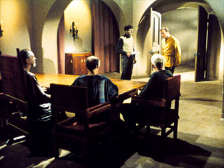
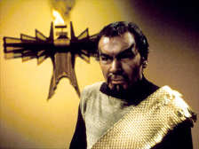
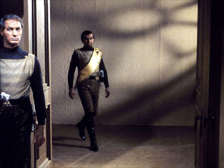
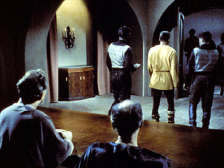
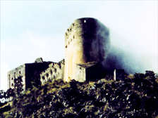

|
Srie
Clssica
Temporada 1

Anlise do episdio por
Carlos Santos


|
MANCHETE
DO EPISDIO |
A Enterprise segue viagem para o planeta Organia com a misso de estabelecer relaes diplomticas com os nativos do planeta que tem posio estratgica para a Federao. Durante a viagem recebe uma mensagem da Frota Estelar informando que as negociaes com o imprio Klingon chegaram ao fim, e que uma guerra eminente, o que torna sua misso ainda mais importante. Subitamente a nave atacada, supostamente pelos Klingons que tambm tem aspiraes quanto a Organia, mas a nave consegue revidar ao ataque, destruindo o inimigo e seguindo na misso.

Kirk informa sobre os planos de ocupao dos Klingons e apresenta a oferta da Federao: Preparar o planeta para se defender armando e treinando seus habitantes para a luta, entretanto Ayelbourne rejeita a oferta declarando que seu povo muito pacifico para lutar. Kirk se desespera e insiste que os Organianos aceitem sua oferta, mas estes continuam inflexveis.
Spock informa ainda a Kirk que a sociedade local est totalmente estagnada e Kirk tenta usar esta situao para convencer os Organianos oferecendo as mais diversas facilidades. Neste momento a Enterprise informa a presena de naves Klingons em rbita, presena esta tambm constatada por Trefayne, um dos membros do conselho dos idosos apesar de no haver nenhum tipo de equipamento de deteco ou comunicao aparente que pudesse ser usado.

Enquanto Kor informa a Kirk os novos regulamentos que sero aplicados pelas foras de ocupao, Spock trazido presena de ambos aps ter passado pela sonda mental sem ser detectado como integrante da Frota Estelar. Kor se d por convencido e deixa o vulcano livre, porm informa-o que ser constantemente vigiado aps ameaar passar Kirk/Barona pelo detector mental e de morte caso a ordem no seja mantida.

O Klingon surpreende Kirk e quando Ayelbourne sabe que Kor pretende passar Kirk pela sonda mental informa sua verdadeira identidade, deixando Kirk encurralado e Kor exultante. O klingon se mostra extremante desapontado com mais esta reao dos Organianos, deixando o local e levando os prisioneiros.
Kirk levado ao escritrio de Kor onde este tenta extrair dados estratgicos da Frota Estelar sem sucesso. Kirk se nega, mas Kor lhe da 12 horas para mudar de idia, caso o contrario levar Kirk para a sonda mental e Spock ser morto, ento o manda para a priso junto com Spock.
Uma vez l, ambos ainda pensam em como escapar e conseguir atrapalhar os planos klingons quando de repente a porta da priso se abre revelando Ayelbourne, que sem explicao aparece e tranqilamente os convida a deixar o cativeiro. Kirk est desconfiado, pois se considera trado pelos Organianos, mas como no tem opes, acaba por aceitar a oferta. Sem serem importunados eles chegam novamente a sala do conselho dos idosos.
Nesta hora Kor informado do misterioso desaparecimento dos prisioneiros sem deixar vestgios apesar dos guardas de prontido, ento manda que executem a ordem de ocupao numero IV, ou seja, a morte de mais 200 organianos e depois mais 200 a cada hora at que Spock e Kirk sejam entregues. Enquanto tenta descobrir como conseguiram sair da cela sem serem importunados pelos Klingons Kirk ouve pelos alto falantes a voz de Kor informando sobre as mortes fica ainda mais furioso com a passividade dos membros do conselho. Ele e Spock decidem sair e lutar. Tentar parar as mortes e exigem de Ayelbourne que lhes entregue suas armas. Apesar de relutante este concorda, ento Kirk e Spock deixam o lugar, certos de que iro morrer tentando deter os Klingons.

noite Kirk e Spock invadem a fortaleza Klingon em busca de Kor, esperando poder para os klingons caso consigam prender o lder. Neste meio tempo o conselho dos idosos se rene para de alguma forma deter a violncia. Kirk e seu imediato surpreendem Kor em seu escritrio. Este informa a uma frota da Federao em curso para interceptar a frota Klingon. Neste momento um grupo de guardas armados que estava observando por monitores de vigilncia entra na sala e surpreende aos dois.
Quando tudo indica um combate ir se desenrolar subitamente as armas de todos se aquecem a ponto de no poderem ser manuseadas. A mesma sensao de temperatura extrema sentida quando algum tenta qualquer tipo de agresso fsica contra o oponente. O mesmo acontece a bordo da Enterprise, e nas naves Klingons, que no podem disparar suas armas devido temperatura extrema dos controles.
Ayelbourne chega ao local junto com os outros membros do conselho alegando serem eles os responsveis pelo fenmeno apesar de Klingons e humanos estarem cticos. Eles entram em contato e suas naves confirmam a total incapacidade de operao. Apesar dos protestos de Kirk e Kor, Ayelbourne afirma que caso ambos os lados no cessem as hostilidades elas ficaram totalmente incapacitadas.
No havendo mais como e nem por que argumentar. Os Organianos solicitam a retirada imediata dos estrangeiros e ento revelam sua verdadeira natureza, ou seja, so seres totalmente de energia que abandonaram a forma corprea a milhes de anos, e que tudo o que se v em Organia uma iluso apenas para olhos forasteiros, mesmo as mortes causadas pelos Klingons. Eles revelam sua verdadeira aparncia pouco antes de desaparecerem totalmente sob os olhares atnitos de Humanos, Klingons e Vulcanos, que finalmente deixam Organia sem que a guerra tenha sido deflagrada
Comentrios:
Aps assistirmos a USS Enterprise passar por vinte seis episdios navegando em calmaria, salvo uma pequena rusga com os Romulanos e outra similar com os Gorns, repentinamente a Federao se v em um clima de quase guerra com os Klingons assim sem mais nem menos. De repente um quadro de tenso pr-existente entre as duas potncias aparece por mgica para permitir que o episodio funcione, o que mais complicado de aceitar por que nem mesmo a outra potncia, no caso o Imprio Klingon, existia antes. Tudo bem que esta maneira como a Srie Clssica foi construda, com episdios totalmente desligados um do outro e no cabe agora fazer tempestade em copo dgua por causa deste detalhe, mas no d para deixar passar sem ao menos uma nota sobre assunto. Uma vez ativado o modo suspenso de descrena quanto a isto, vamos ao que interessa.
Todo episodio que comea com muita ao sempre garante a ateno do telespectador e desperta expectativas. Neste caso, o ataque sofrido pela Enterprise praticado pelos Klingons arrasta a ateno da audincia e mais importante, d a dimenso exata de como andam no momento as relaes com estes seres at ento desconhecidos.

Estes dois pequenos elementos de trama, - ataque a Enterprise e comentrios de Kirk tem funo importante para o episodio, pois preparam o terreno para que capito ponha em ao a sua Misso de Misericrdia, ou seja, defender os fracos e oprimidos. Mas aps chegar a Organia e encontrar um povo extremamente pacifico em um perigo que s existe devido ao interesse das duas potncias pelo seu planeta, nosso heri, James T. Kirk no consegue pensar em outra coisa a no ser armar estas pessoas e jog-las em um conflito que no lhes pertence.
Kirk chega a ponto de oferecer facilidades aos Organianos como forma de convenc-los a optar pelo lado da Federao. claro que tanta benevolncia s acontece por que Organia passa a ter interesse estratgico vital, pois ele sempre esteve l e ningum deu a mnima antes.
Neste primeiro momento o segmento lida com o oportunismo institucionalizado que tenta travestir-se de humanismo, e neste processo beira o assistencialismo que pretende comprar novos recrutas para suas necessidades. Tanto a Federao quanto seus inimigos querem Organia para seus interesses prprios, sendo que a diferena que os Klingons so mais sinceros quanto a isto, somente. claro que situaes extremas s vezes requerem aes extremas, mas aqui, em nenhum momento Kirk tenta pelo menos entender ou enxergar algum mrito na firme convico d filosofia de no violncia abraada pelos nativos do planeta atrasado passa todo o tempo recriminando-os por isto, chegando inclusive a insultar os Organianos. Embora seja esta uma situao extrema no deixa de ser um pssimo exemplo para um primeiro contato com outros mundos.

Com a chegada da Frota Klingon a Organia nos somos finalmente apresentados ao vilo do segmento face a face. A estria dos Klingons na Srie Clssica foi brilhantemente realizada por John Colicos. Ele Kor, o arrogante Governador Militar de Organia como ele mesmo se auto-intitula. Kor d vida a um adversrio implacvel, violento e determinado, que acredita em sua superioridade e que despreza os fracos como os nativos do planeta. Colicos tem uma forte presena que consegue transmitir fora em sua caracterizao e apesar do estereotipo Klingon da Srie Clssica ter sido criado sob o estigma do rufio, Kor consegue ser mais do que isto, graas presena do ator que o encarna. Infelizmente isto expe demais Willian Shatner que sempre que contracena com Colicos aparece superado pelo seu talento. Pelo menos aqui isto pode ser justificado pela qualidade do ator.
Assim como Kirk, Kor tambm se decepciona com a passividade do povo local, pois para uma raa que vive de batalhas nada mais frustrante que um inimigo que no luta, logo no pode ser vencido. Mas ele mesmo admite que admira Kirk e a Frota Estelar, por que v em suas contrapartes no uma negao, mas um complemento. Vejam que a certa altura dos acontecimentos Kirk est disposto a usar de violncia mesmo contra aqueles a quem pretende ajudar quando julga que isto necessrio. Anos mais tarde com a chegada de A Nova Gerao os Klingons ganhariam vida prpria e uma nova caracterizao, mas em Errand of Mercy estes seres foram concebidos to somente para mostrar em relevo a faceta violenta e barbara da Humanidade que deve ser vigiada, pois est sempre presente; prestes a emergir caso a oportunidade aparea. Os klingons representam a fora bruta com a qual a humanidade normalmente tenta resolver os seus problemas sem muito sucesso.

Pena que o confronto entre as personalidades de ambos seja to breve, pois na maior parte do tempo o episodio insiste na temtica pacifista (o que bom, no entendam mal), e muito mais preocupado em analisar o tratamento que as duas foras antagnicas do a questo, deixando as relaes interpessoais em segundo plano.
Finalmente chega a hora da verdade, com Kirk e Spock agindo de acordo com seu treinamento, e ambas as frotas se aproximando para o confronto final. Entretanto os Organianos se revelam e estragam os planos dos contendores. Mais uma vez a Humanidade ser julgada por seres avanadssimos com poderes alm da nossa compreenso, e uma vez mais, a Srie Clssica reafirma ao seu publico sua mensagem contra a violncia. O questionamento de Ayelbourne sobre o direito de Klingons e a Federao resolverem seus problemas na base da pancada bastante significativo e chama a reflexo sobre o que tais convices realmente representam.
E reparem que mais do que poderes alm da nossa compreenso os Organianos tem outra caracterstica peculiar. A idade. Outros seres poderosos de Jornada tambm tiveram como caracterstica a longevidade, mas aqui h uma entrelinha que fala da importncia da experincia que traz a sabedoria to necessria para o crescimento pessoal. No toa que quando Kirk pergunta a Ayelbourne pelas autoridades de Organia, ele levado ao conselho dos ancies, nico corpo de autoridade constituda no local.
Outros dois episdios esto intrinsecamente ligados a este. O primeiro Arena, onde uma colnia da Federao atacada fornecendo o pretexto para a Enterprise engajar em uma perseguio com o nico propsito de destruir seus agressores. Quando Kirk est a ponto de derrotar definitivamente seu oponente, eis que uma ponta de humanidade surge fazendo com que o capito no desfira o golpe fatal sobre o comandante Gorn. Naquele segmento os Metrons apenas observam, sem interferir, logo Kirk dono de suas aes. Um final significativo pois aponta claramente para uma aposta na evoluo do ser humano e sua capacidade de ascender enquanto raa. J em Errand of Mercy apenas a interferncia dos Organianos capaz de deter a violncia.
A outra referencia seria A Taste of Armageddon. Notemos que neste episodio os papeis esto invertidos, sendo que Kirk e seus comandados foram os responsveis por tirar dois povos inimigos (Vendikars e Eminianos) do caminho da guerra e coloca-los na trilha da cooperao e conseqentemente do crescimento, abandonado em nome da guerra. Mais uma vez necessria interferncia externa para que o conflito seja solucionado. Naquela instncia de Kirk e seus comandados.
Primeira Diretriz? Esqueam definitivamente, pois a Srie Clssica prova sempre que em alguns momentos pode ser que isto seja positivo. Talvez seja talvez no, mas isto outra discusso. Fossemos fazer uma leitura dos trs episdios como um conjunto, poderamos facilmente concluir que a proposta da Srie Clssica mostrar uma humanidade capaz de dar uma no cravo (A Taste of Armagedon) e outra na ferradura (Errand Of Mercy), eventualmente precisando de uma mozinha (Arena) para no fazer bobagem. No deixa de ser uma viso realista, e muito interessante principalmente levando em considerao a poca em que foi levada ao ar.
Como ressalvas temos principalmente a extenso dos poderes dos Organianos. A soluo adotada para evitar o combate de Federados e Klingons onde quer que estejam alm de improvvel foi convenientemente esquecida posteriormente em The Trouble with Tribbles e Day of the Dove, isto somente para falar da Srie Clssica. Tal deciso teve saldo positivo, caso contrrio teria sido praticamente sepultada a possibilidade de retorno destes seres a srie, mas no pode deixar de ser mencionada.
Temos ainda questes tcnicas. A ausncia de efeitos especiais condizentes com a proposta do episodio o enfraquece muito, e temos que nos contentar com uns breves disparos de feisers (ou torpedos!?) reaproveitados de episdios anteriores . muito chato ouvir falar dos combates, frotas inimigas e da Federao somente em relatrios de situao, mesmo descontando as questes de oramento e a dificuldade de realizar tais efeitos a poca.
Mas algo muito mais difcil de disfarar a pauprrima caracterizao dos Klingons. Nada, nem mesmo a necessidade de economizar alguns dlares desculpam a infame barbicha usada por Colicos para caracterizar seu personagem. Coisa lamentvel. Se havia alguma inteno de relacionar os Klingons com o povo Mongol o tiro definitivamente saiu pela culatra. Felizmente anos mais tarde a volta da Srie Clssica, j em sua verso para as grandes telas dos cinemas, daria uma melhor forma a uma das criaes mais importantes da franquia Jornada nas Estrelas.
Outro ponto negativo a utilizao de Spock neste episodio, muito robotizado servindo apenas como apoio para Kirk, um retrocesso quando nos vem a lembrana participao de Nimoy em segmentos como: Galileo Seven, The Naked Time e The Menagerie.
O segmento traz em resumo: uma boa trama que tematicamente desnuda uma faceta no to imaculada da Frota Estelar em seus mtodos e atitudes, a estria dos Klingons (a raa aliengena mais presente em Jornada Nas Estrelas em todas as suas encarnaes) na srie, um imediato elemento moderador para o imediato conflito com tal raa, embutido nos Organianos, e um maravilhoso convidado na pessoa de Colicos. Um timo segmento, com grande relevncia histrica dentro da marca..
Kirk: Of course we blew it up.
Deliberately.
(" claro que o explodimos. Deliberadamente.")
Trefayne: But that was violence.
("Mas isso violncia.")
Kirk: You can fight back. Instead of sheep, you can be wolves.
("Voc pode lutar. Em vez de ovelhas, vocs podem ser
lobos.")
Trefayne: Terrible...To destroy.
("Terrvel... Destruir.")
Kor:
The fact is, Captain, I have a great admiration for your Starfleet.
A remarkable instrument. And I must confess to a certain admiration
for you.
("O fato , capito, que tenho uma grande admirao
pela sua Frota Estelar. Um instrumento notvel. E devo confessar
uma certa admirao pelo senhor.")
Kor: You of the Federation, you are much like us.
("Vocs da Federao, vocs so muito parecidos
conosco.")
Kirk: We're nothing like you. We're a democratic body.
("No temos nada em comum. Somos um corpo
democrtico.")
Kor: Come now. I'm not referring to minor ideological differences. I
mean that we are similar as a species.
("Ora, no estou me referindo a pequenas diferenas
ideolgicas. Quero dizer que somos similares enquanto
espcies.")
Kor: I respect you, Captain, but... This is war, a game we Klingons
play to win.
("Eu o respeito, capito. Mas... isto guerra, um jogo
que jogamos para vencer.")
Kirk: You expect us to trust you now?
("Agora voc espera que ns acreditemos em vocs?")
Ayelbourne: Is there really a choice, Captain?
("O senhor tem alguma alternativa, capito?")
Kirk: You've told us you hate violence. Unless you tell me where
those phasers are, you'll have more violence than you know what to
do with.
("Voc nos disse que odeia violncia. A no ser que me
diga onde esto aqueles phasers, ter tanta violncia que nem
saber o que fazer.")
Ayelbourne: You mean you would actually use force?
("Quer dizer que o senhor usaria a fora?")
Kirk: It's entirely up to you.
("Depende inteiramente de voc.")
Kirk: What are the odds on our getting out of here?
("Quais so as nossas chances de sair daqui?")
Spock: Difficult to be precise, Captain. I should say approximately
7,824.7-to-1.
(" difcil ser preciso, capito. Devo dizer que so de
aproximadamente 7.824,7 para 1.")
Kirk: Difficult to be precise?
("Difcil ser preciso?")
Ayelbourne: Oh, eventually, you will have peace, but only after
millions of people have died. It is true that in the future, you and
the Klingons will become fast friends. You will work together.
("Oh, eventualmente voc ter a paz, mas s depois que
milhes tiverem morrido. verdade que, no futuro, vocs e os
Klingons se tornaro amigos rpido. Vocs trabalharo
juntos.")
 O
saudoso ator Canadense John Colicos, falecido em 6 de maro de
2000, tambm participou de outra marca famosa da fico
cientifica televisiva, tendo interpretado o Lorde Baltar na srie
Battlestar Galactica. Ele voltaria a Jornada Nas Estrelas
em Deep Space Nine com o mesmo personagem Kor nos episdios:
Blood Oath da segunda temporada (juntamente com Michael
Ansara como o Klingon Kang, de The Day Of The Dove e
William Bill Campbell como o Klingon Koloth de The
Trouble With Tribbles, ambos da Srie Clssica), The
Sword of Kahless da quarta temporada, e Once More Unto
the Breach da stima temporada (neste ltimo Kor morre, em
um segmento que uma grande homenagem ao personagem, sendo um dos
ltimos trabalhos profissionais do ator).
O
saudoso ator Canadense John Colicos, falecido em 6 de maro de
2000, tambm participou de outra marca famosa da fico
cientifica televisiva, tendo interpretado o Lorde Baltar na srie
Battlestar Galactica. Ele voltaria a Jornada Nas Estrelas
em Deep Space Nine com o mesmo personagem Kor nos episdios:
Blood Oath da segunda temporada (juntamente com Michael
Ansara como o Klingon Kang, de The Day Of The Dove e
William Bill Campbell como o Klingon Koloth de The
Trouble With Tribbles, ambos da Srie Clssica), The
Sword of Kahless da quarta temporada, e Once More Unto
the Breach da stima temporada (neste ltimo Kor morre, em
um segmento que uma grande homenagem ao personagem, sendo um dos
ltimos trabalhos profissionais do ator).
 O
diretor deste episdio, John Newland, foi a principal fora
criativa da srie cult: One Step Beyond.
O
diretor deste episdio, John Newland, foi a principal fora
criativa da srie cult: One Step Beyond.
Histria de
Gene
L Coon
Direo de
Msica: Alexander Courage
Exibido em 23/03/1967
Produo: 27
Elenco:
William Shatner
como James Tiberius Kirk
Leonard Nimoy como Spock
DeForest Kelley como Leonard H. McCoy
Nichelle Nichols como Uhura
George Takei como Hikaru Sulu
Elenco convidado:
John Colicos como Kor
Jon Abbott como Ayelbourne
David Hillary Hughes como Trefayne
Peter
Brocco como Claymare